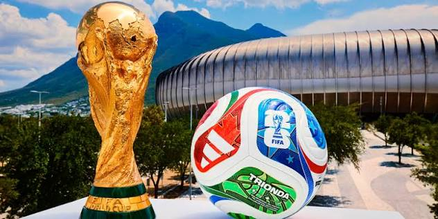
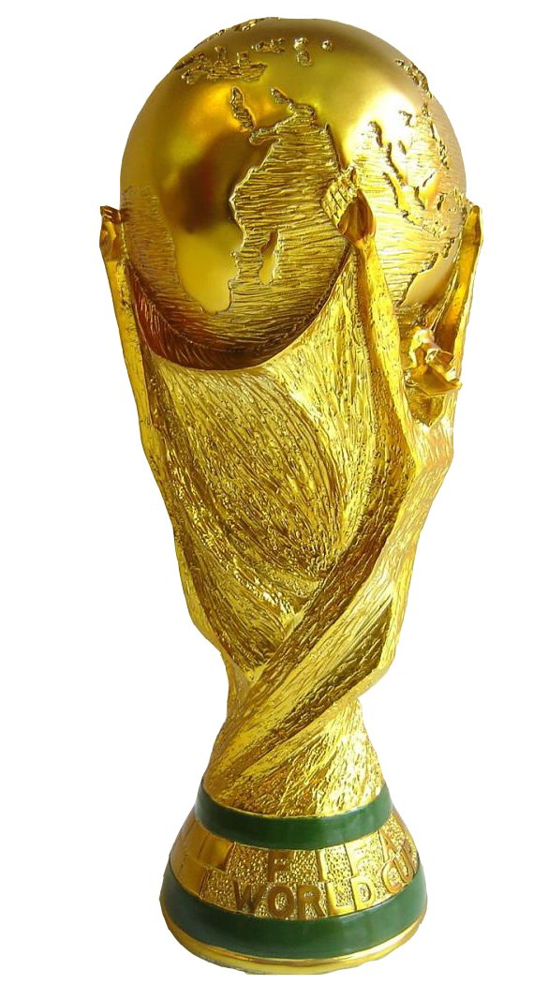
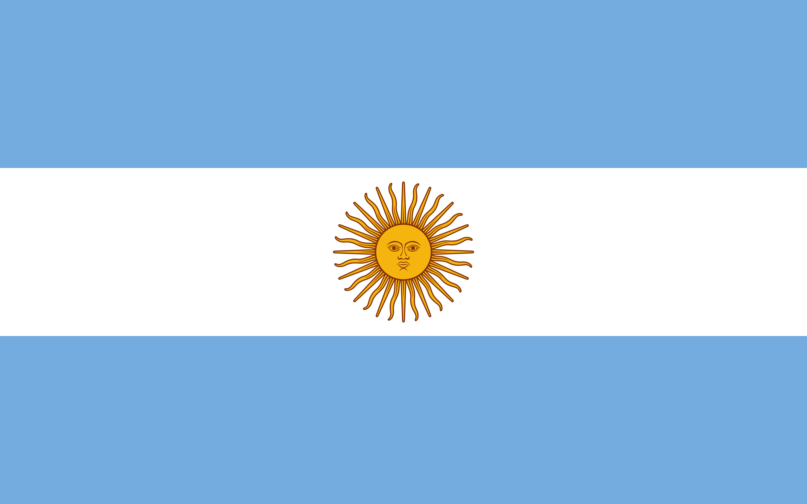

La Copa Mundial de la FIFA reúne a las mejores selecciones nacionales para competir por el trofeo más prestigioso del fútbol. Millones de aficionados alrededor del mundo disfrutan de este gran evento deportivo lleno de emoción, historia y pasión.

El primer Mundial se disputó en Uruguay en 1930. Desde entonces se celebra cada cuatro años y se ha convertido en el evento deportivo más seguido del mundo.

Argentina conquistó la Copa Mundial de Qatar 2022 tras vencer a Francia en una emocionante final definida por penales.

El Mundial 2026 será organizado por Estados Unidos, México y Canadá, siendo la primera edición con 48 selecciones.